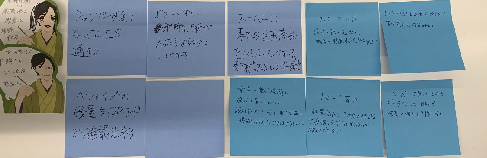
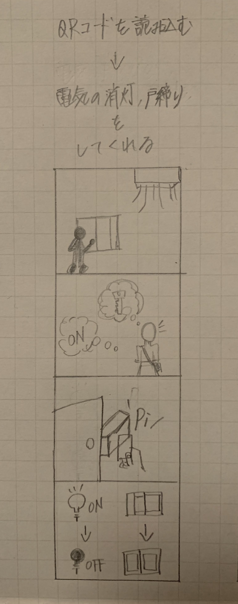

아직아직...
IoTに関して：遠隔で操作、管理させることで、どのような新しいサービスが考えられるか？
1.グループワークした内容（ポストイット画像）

2.自分で考えたアイディア（スケッチ）
バイト先で戸締りをしている時。 窓は全部閉めたか、自動ドアはロックをかけたか、電気は消したか、、、など心配になる時があります。 そんな時にこのカードがあればそんな心配も要りません！ カードをかざすだけで自動で戸締り、消灯を行ってくれます。 